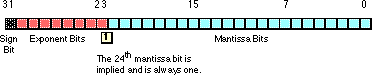
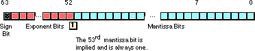
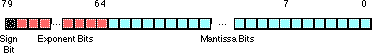

| Table of Content | Chapter Fourteen (Part 2) |
|
| Table of Content | Chapter Fourteen (Part 2) |
|
| CHAPTER
FOURTEEN: FLOATING POINT ARITHMETIC (Part 1) |
||
| 14.0 -
Chapter Overview 14.1 - The Mathematics of Floating Point Arithmetic 14.2 - IEEE Floating Point Formats 14.3 - The UCR Standard Library Floating Point Routines 14.3.1 - Load and Store Routines 14.3.2 - Integer/Floating Point Conversion 14.3.3 - Floating Point Arithmetic 14.3.4 - Float/Text Conversion and Printff 14.4 - The 80x87 Floating Point Coprocessors 14.4.1 - FPU Registers 14.4.1.1 - The FPU Data Registers 14.4.1.2 - The FPU Control Register 14.4.1.3 - The FPU Status Register 14.4.2 - FPU Data Types 14.4.3 - The FPU Instruction Set 14.4.4 - FPU Data Movement Instructions 14.4.4.1 - The FLD Instruction 14.4.4.2 - The FST and FSTP Instructions 14.4.4.3 - The FXCH Instruction 14.4.5 - Conversions 14.4.5.1 - The FILD Instruction 14.4.5.2 - The FIST and FISTP Instructions 14.4.5.3 - The FBLD and FBSTP Instructions 14.4.6 - Arithmetic Instructions 14.4.6.1 - The FADD and FADDP Instructions 14.4.6.2 - The FSUB, FSUBP, FSUBR, and FSUBRP Instructions 14.4.6.3 - The FMUL and FMULP Instructions 14.4.6.4 - The FDIV, FDIVP, FDIVR, and FDIVRP Instructions 14.4.6.5 - The FSQRT Instruction 14.4.6.6 - The FSCALE Instruction 14.4.6.7 - The FPREM and FPREM1 Instructions 14.4.6.8 - The FRNDINT Instruction 14.4.6.9 - The FXTRACT Instruction 14.4.6.10 - The FABS Instruction 14.4.6.11 - The FCHS Instruction 14.4.7 - Comparison Instructions 14.4.7.1 - The FCOM, FCOMP, and FCOMPP Instructions 14.4.7.2 - The FUCOM, FUCOMP, and FUCOMPP Instructions 14.4.7.3 - The FTST Instruction 14.4.7.4 - The FXAM Instruction 14.4.8 - Constant Instructions 14.4.9 - Transcendental Instructions 14.4.9.1 - The F2XM1 Instruction 14.4.9.2 - The FSIN, FCOS, and FSINCOS Instructions 14.4.9.3 - The FPTAN Instruction 14.4.9.4 - The FPATAN Instruction 14.4.9.5 - The FYL2X and FYL2XP1 Instructions 14.4.10 - Miscellaneous instructions 14.4.10.1 - The FINIT and FNINIT Instructions 14.4.10.2 - The FWAIT Instruction 14.4.10.3 - The FLDCW and FSTCW Instructions 14.4.10.4 - The FCLEX and FNCLEX Instructions 14.4.10.5 - The FLDENV, FSTENV, and FNSTENV Instructions 14.4.10.6 - The FSAVE, FNSAVE, and FRSTOR Instructions 14.4.10.7 - The FSTSW and FNSTSW Instructions 14.4.10.8 - The FINCSTP and FDECSTP Instructions 14.4.10.9 - The FNOP Instruction 14.4.10.10 - The FFREE Instruction 14.4.11 - Integer Operations 14.5 - Sample Program: Additional Trigonometric Functions |
Copyright 1996 by Randall Hyde
All rights reserved. Duplication other than for immediate display through a browser is prohibited by U.S. Copyright Law. This material is provided on-line as a beta-test of this text. It is for the personal use of the reader only. If you are interested in using this material as part of a course, please contact rhyde@cs.ucr.edu Supporting software and other materials are available via anonymous ftp from ftp.cs.ucr.edu. See the "/pub/pc/ibmpcdir" directory for details. You may also download the material from "Randall Hyde's Assembly Language Page" at URL: http://webster.ucr.edu Notes: This document does not contain the laboratory exercises, programming assignments, exercises, or chapter summary. These portions were omitted for several reasons: either they wouldn't format properly, they contained hyperlinks that were too much work to resolve, they were under constant revision, or they were not included for security reasons. Such omission should have very little impact on the reader interested in learning this material or evaluating this document. This document was prepared using Harlequin's Web Maker 2.2 and Quadralay's Webworks Publisher. Since HTML does not support the rich formatting options available in Framemaker, this document is only an approximation of the actual chapter from the textbook. If you are absolutely dying to get your hands on a version other than HTML, you might consider having the UCR Printing a Reprographics Department run you off a copy on their Xerox machines. For details, please read the following EMAIL message I received from the Printing and Reprographics Department:
We are currently working on ways to publish this text in a form other than HTML (e.g., Postscript, PDF, Frameviewer, hard copy, etc.). This, however, is a low-priority project. Please do not contact Randall Hyde concerning this effort. When something happens, an announcement will appear on "Randall Hyde's Assembly Language Page." Please visit this WEB site at http://webster.ucr.edu for the latest scoop. Redesigned 10/2000 with "MS FrontPage 98" using
17" monitor 1024x768 |
|
Although integers provide an exact representation for numeric values, they suffer from two major drawbacks: the inability to represent fractional values and a limited dynamic range. Floating point arithmetic solves these two problems at the expense of accuracy and, on some processors, speed. Most programmers are aware of the speed loss associated with floating point arithmetic; however, they are blithely unware of the problems with accuracy.
For many applications, the benefits of floating point outweigh the disadvantages. However, to properly use floating point arithmetic in any program, you must learn how floating point arithmetic operates. Intel, understanding the importance of floating point arithmetic in modern programs, provided support for floating point arithmetic in the earliest designs of the 8086 - the 80x87 FPU (floating point unit or math coprocessor). However, on processors eariler than the 80486 (or on the 80486sx), the floating point processor is an optional device; it this device is not present you must simulate it in software.
This chapter contains four main sections. The first section discusses floating point arithmetic from a mathematical point of view. The second section discusses the binary floating point formats commonly used on Intel processors. The third discusses software floating point and the math routines from the UCR Standard Library. The fourth section discusses the 80x87 FPU chips.
This chapter contains four major sections: a description of floating point formats and operations (two sections), a discussion of the floating point support in the UCR Standard Library, and a discussion of the 80x87 FPU (floating point unit). The sections below that have a "*" prefix are essential. Those sections with a "o" discuss advanced topics that you may want to put off for a while.
* The mathematics of floating point arithmetic.
* IEEE floating point formats.
* The UCR Standard Library floating point routines.
* The 80x87 floating point coprocessors.
* FPU data movement instructions.
o Conversions.
* Arithmetic instructions.
* Comparison instructions.
o Constant instructiuons.
o Transcendental instructions.
o Miscellaneous instructions.
o Integer operations.
o Additional trigonometric functions.
A big problem with floating point arithmetic is that it does not follow the standard rules of algebra. Nevertheless, many programmers apply normal algebraic rules when using floating point arithmetic. This is a source of bugs in many programs. One of the primary goals of this section is to describe the limitations of floating point arithmetic so you will understand how to use it properly.
Normal algebraic rules apply only to infinte precision
arithmetic. Consider the simple statement x:=x+1, x is an integer. On any
modern computer this statement follows the normal rules of algebra as long as overflow
does not occur. That is, this statement is valid only for certain values of x (minint
<= x < maxint). Most programmers do not have a problem with this because they are
well aware of the fact that integers in a program do not follow the standard algebraic
rules (e.g., 5/2 <> 2.5).
Integers do not follow the standard rules of algebra because the computer represents them with a finite number of bits. You cannot represent any of the (integer) values above the maximum integer or below the minimum integer. Floating point values suffer from this same problem, only worse. After all, the integers are a subset of the real numbers. Therefore, the floating point values must represent the same infinite set of integers. However, there are an infinite number of values between any two real values, so this problem is infinitely worse. Therefore, as well as having to limit your values between a maximum and minimum range, you cannot represent all the values between those two ranges, either.
To represent real numbers, most floating point formats employ scientific notation and use some number of bits to represent a mantissa and a smaller number of bits to represent an exponent. The end result is that floating point numbers can only represent numbers with a specific number of significant digits. This has a big impact on how floating point arithmetic operations. To easily see the impact of limited precision arithmetic, we will adopt a simplified decimal floating point format for our examples. Our floating point format will provide a mantissa with three significant digits and a decimal exponent with two digits. The mantissa and exponents are both signed values
When adding and subtracting two numbers in scientific notation, you must adjust the two values so that their exponents are the same. For example, when adding 1.23e1 and 4.56e0, you must adjust the values so they have the same exponent. One way to do this is to to convert 4.56e0 to 0.456e1 and then add. This produces 1.686e1. Unfortunately, the result does not fit into three significant digits, so we must either round or truncate the result to three significant digits. Rounding generally produces the most accurate result, so let's round the result to obtain 1.69e1. As you can see, the lack of precision (the number of digits or bits we maintain in a computation) affects the accuracy (the correctness of the computation).
In the previous example, we were able to round the result because we maintained four significant digits during the calculation. If our floating point calculation is limited to three significant digits during computation, we would have had to truncate the last digit of the smaller number, obtaining 1.68e1 which is even less correct. Extra digits available during a computation are known as guard digits (or guard bits in the case of a binary format). They greatly enhance accuracy during a long chain of computations.
The accuracy loss during a single computation usually isn't enough to worry about unless you are greatly concerned about the accuracy of your computations. However, if you compute a value which is the result of a sequence of floating point operations, the error can accumulate and greatly affect the computation itself. For example, suppose we were to add 1.23e3 with 1.00e0. Adjusting the numbers so their exponents are the same before the addition produces 1.23e3 + 0.001e3. The sum of these two values, even after rounding, is 1.23e3. This might seem perfectly reasonable to you; after all, we can only maintain three significant digits, adding in a small value shouldn't affect the result at all. However, suppose we were to add 1.00e0 1.23e3 ten times. The first time we add 1.00e0 to 1.23e3 we get 1.23e3. Likewise, we get this same result the second, third, fourth, ..., and tenth time we add 1.00e0 to 1.23e3. On the other hand, had we added 1.00e0 to itself ten times, then added the result (1.00e1) to 1.23e3, we would have gotten a different result, 1.24e3. This is the most important thing to know about limited precision arithmetic:
The order of evaluation can effect the accuracy of the result.
You will get more accurate results if the relative magnitudes (that is, the exponents) are close to one another. If you are performing a chain calculation involving addition and subtraction, you should attempt to group the values appropriately.
Another problem with addition and subtraction is that you can wind up with false precision. Consider the computation 1.23e0 - 1.22 e0. This produces 0.01e0. Although this is mathematically equivalent to 1.00e-2, this latter form suggests that the last two digits are exactly zero. Unfortunately, we've only got a single significant digit at this time. Indeed, some FPUs or floating point software packages might actually insert random digits (or bits) into the L.O. positions. This brings up a second important rule concerning limited precision arithmetic:
Multiplication and division do not suffer from the same problems as addition and subtraction since you do not have to adjust the exponents before the operation; all you need to do is add the exponents and multiply the mantissas (or subtract the exponents and divide the mantissas). By themselves, multiplication and division do not produce particularly poor results. However, they tend to multiply any error which already exists in a value. For example, if you multiply 1.23e0 by two, when you should be multiplying 1.24e0 by two, the result is even less accurate. This brings up a third important rule when working with limited precision arithmetic:
Often, by applying normal algebraic transformations, you can arrange a calculation so the multiply and divide operations occur first. For example, suppose you want to compute x*(y+z). Normally you would add y and z together and multiply their sum by x. However, you will get a little more accuracy if you transform x*(y+z) to get x*y+x*z and compute the result by performing the multiplications first.
Multiplication and division are not without their own problems. When multiplying two very large or very small numbers, it is quite possible for overflow or underflow to occur. The same situation occurs when dividing a small number by a large number or dividing a large number by a small number. This brings up a fourth rule you should attempt to follow when multiplying or dividing values:
Comparing floating pointer numbers is very dangerous. Given the inaccuracies present in any computation (including converting an input string to a floating point value), you should never compare two floating point values to see if they are equal. In a binary floating point format, different computations which produce the same (mathematical) result may differ in their least significant bits. For example, adding 1.31e0+1.69e0 should produce 3.00e0. Likewise, adding 2.50e0+1.50e0 should produce 3.00e0. However, were you to compare (1.31e0+1.69e0) agains (2.50e0+1.50e0) you might find out that these sums are not equal to one another. The test for equality succeeds if and only if all bits (or digits) in the two operands are exactly the same. Since this is not necessarily true after two different floating point computations which should produce the same result, a straight test for equality may not work.
The standard way to test for equality between floating point numbers is to determine how much error (or tolerance) you will allow in a comparison and check to see if one value is within this error range of the other. The straight-forward way to do this is to use a test like the following:
if Value1 >= (Value2-error) and Value1 <= (Value2+error) then ...
Another common way to handle this same comparison is to use a statement of the form:
if abs(Value1-Value2) <= error then ...
Most texts, when discussing floating point comparisons, stop immediately after discussing the problem with floating point equality, assuming that other forms of comparison are perfectly okay with floating point numbers. This isn't true! If we are assuming that x=y if x is within y±error, then a simple bitwise comparison of x and y will claim that x<y if y is greater than x but less than y+error. However, in such a case x should really be treated as equal to y, not less than y. Therefore, we must always compare two floating point numbers using ranges, regardless of the actual comparison we want to perform. Trying to compare two floating point numbers directly can lead to an error. To compare two floating point numbers, x and y, against one another, you should use one of the following forms:
= if abs(x-y) <= error then ... <> (!=) if abs(x-y) > error then ... < if (x-y) < error then ... <= if (x-y) <= error then ... > if (x-y) > error then ... >= if (x-y) >= error then ...
You must exercise care when choosing the value for error. This should be a value slightly greater than the largest amount of error which will creep into your computations. The exact value will depend upon the particular floating point format you use, but more on that a little later. The final rule we will state in this section is
There are many other little problems that can occur when using floating point values. This text can only point out some of the major problems and make you aware of the fact that you cannot treat floating point arithmetic like real arithmetic - the inaccuracies present in limited precision arithmetic can get you into trouble if you are not careful. A good text on numerical analysis or even scientific computing can help fill in the details which are beyond the scope of this text. If you are going to be working with floating point arithmetic, in any language, you should take the time to study the effects of limited precision arithmetic on your computations.
When Intel planned to introduce a floating point coprocessor for their new 8086 microprocessor, they were smart enough to realize that the electrical engineers and solid-state physicists who design chips were, perhaps, not the best people to do the necessary numerical analysis to pick the best possible binary representation for a floating point format. So Intel went out and hired the best numerical analyst they could find to design a floating point format for their 8087 FPU. That person then hired two other experts in the field and the three of them (Kahn, Coonan, and Stone) designed Intel's floating point format. They did such a good job designing the KCS Floating Point Standard that the IEEE organization adopted this format for the IEEE floating point format[1].
To handle a wide range of performance and accuracy requirements, Intel actually introduced three floating point formats: single precision, double precision, and extended precision. The single and double precision formats corresponded to C's float and double types or FORTRAN's real and double precision types. Intel intended to use extended precision for long chains of computations. Extended precision contains 16 extra bits that the calculations could use for guard bits before rounding down to a double precision value when storing the result.
The single precision format uses a one's complement 24 bit mantissa and an eight bit excess-128 exponent. The mantissa usually represents a value between 1.0 to just under 2.0. The H.O. bit of the mantissa is always assumed to be one and represents a value just to the left of the binary point[2]. The remaining 23 mantissa bits appear to the right of the binary point. Therefore, the mantissa represents the value:
1.mmmmmmm mmmmmmmm mmmmmmmm
The "mmmm..." characters represent the 23 bits of the mantissa. Keep in mind that we are working with binary numbers here. Therefore, each position to the right of the binary point represents a value (zero or one) times a successive negative power of two. The implied one bit is always multiplied by 20, which is one. This is why the mantissa is always greater than or equal to one. Even if the other mantissa bits are all zero, the implied one bit always gives us the value one[3]. Of course, even if we had an almost infinite number of one bits after the binary point, they still would not add up to two. This is why the mantissa can represent values in the range one to just under two.
Although there are an infinite number of values between one and two, we can only represent eight million of them because we a 23 bit mantissa (the 24th bit is always one). This is the reason for inaccuracy in floating point arithmetic - we are limited to 23 bits of precision in compuations involving single precision floating point values.
The mantissa uses a one's complement format rather than two's complement. This means that the 24 bit value of the mantissa is simply an unsigned binary number and the sign bit determines whether that value is positive or negative. One's complement numbers have the unusual property that there are two representations for zero (with the sign bit set or clear). Generally, this is important only to the person designing the floating point software or hardware system. We will assume that the value zero always has the sign bit clear.
To represent values outside the range 1.0 to just under 2.0, the exponent portion of the floating point format comes into play. The floating point format raise two to the power specified by the exponent and then multiplies the mantissa by this value. The exponent is eight bits and is stored in an excess-127 format. In excess-127 format, the exponent 20 is represented by the value 127 (7fh). Therefore, to convert an exponent to excess-127 format simply add 127 to the exponent value. The use of excess-127 format makes it easier to compare floating point values. The single precision floating point format takes the form shown below:

With a 24 bit mantissa, you will get approximately 6-1/2 digits of precision (one half digit of precision means that the first six digits can all be in the range 0..9 but the seventh digit can only be in the range 0..x where x<9 and is generally close to five). With an eight bit excess-128 exponent, the dynamic range of single precision floating point numbers is approximately 2±128 or about 10±38.
Although single precision floating point numbers are perfectly suitable for many applications, the dynamic range is somewhat small for many scientific applications and the very limited precision is unsuitable for many financial, scientific, and other applications. Furthermore, in long chains of computations, the limited precision of the single precision format may introduce serious error.
The double precision format helps overcome the problems of single preicision floating point. Using twice the space, the double precision format has an 11-bit excess-1023 exponent and a 53 bit mantissa (with an implied H.O. bit of one) plus a sign bit. This provides a dynamic range of about 10±308and 14-1/2 digits of precision, sufficient for most applications. Double precision floating point values take the form shown below:

In order to help ensure accuracy during long chains of computations involving double precision floating point numbers, Intel designed the extended precision format. The extended precision format uses 80 bits. Twelve of the additional 16 bits are appended to the mantissa, four of the additional bits are appended to the end of the exponent. Unlike the single and double precision values, the extended precision format does not have an implied H.O. bit which is always one. Therefore, the extended precision format provides a 64 bit mantissa, a 15 bit excess-16383 exponent, and a one bit sign. The format for the extended precision floating point value is shown below:

On the 80x87 FPUs and the 80486 CPU, all computations are done using the extended precision form. Whenever you load a single or double precision value, the FPU automatically converts it to an extended precision value. Likewise, when you store a single or double precision value to memory, the FPU automatically rounds the value down to the appropriate size before storing it. By always working with the extended precision format, Intel guarantees a large number of guard bits are present to ensure the accuracy of your computations. Some texts erroneously claim that you should never use the extended precision format in your own programs, because Intel only guarantees accurate computations when using the single or double precision formats. This is foolish. By performing all computations using 80 bits, Intel helps ensure (but not guarantee) that you will get full 32 or 64 bit accuracy in your computations. Since the 80x87 FPUs and 80486 CPU do not provide a large number of guard bits in 80 bit computations, some error will inevitably creep into the L.O. bits of an extended precision computation. However, if your computation is correct to 64 bits, the 80 bit computation will always provide at least 64 accurate bits. Most of the time you will get even more. While you cannot assume that you get an accurate 80 bit computation, you can usually do better than 64 when using the extended precision format.
To maintain maximum precision during computation, most computations use normalized values. A normalized floating point value is one that has a H.O. mantissa bit equal to one. Almost any non-normalized value can be normalized by shifting the mantissa bits to the left and decrementing the exponent by one until a one appears in the H.O. bit of the mantissa. Remember, the exponent is a binary exponent. Each time you increment the exponent, you multiply the floating point value by two. Likewise, whenever you decrement the exponent, you divide the floating point value by two. By the same token, shifting the mantissa to the left one bit position multiplies the floating point value by two; likewise, shifting the mantissa to the right divides the floating point value by two. Therefore, shifting the mantissa to the left one position and decrementing the exponent does not change the value of the floating point number at all.
Keeping floating point numbers normalized is beneficial because it maintains the maximum number of bits of precision for a computation. If the H.O. bits of the mantissa are all zero, the mantissa has that many fewer bits of precision available for computation. Therefore, a floating point computation will be more accurate if it involves only normalized values.
There are two important cases where a floating point number cannot be normalized. The value 0.0 is a special case. Obviously it cannot be normalized because the floating point representation for zero has no one bits in the mantissa. This, however, is not a problem since we can exactly represent the value zero with only a single bit.
The second case is when we have some H.O. bits in the mantissa which are zero but the biased exponent is also zero (and we cannot decrement it to normalize the mantissa). Rather than disallow certain small values, whose H.O. mantissa bits and biased exponent are zero (the most negative exponent possible), the IEEE standard allows special denormalized values to represent these smaller values[4]. Although the use of denormalized values allows IEEE floating point computations to produce better results than if underflow occurred, keep in mind that denormalized values offer less bits of precision and are inherently less accurate.
Since the 80x87 FPUs and 80486 CPU always convert single and double precision values to extended precision, extended precision arithmetic is actually faster than single or double precision. Therefore, the expected performance benefit of using the smaller formats is not present on these chips. However, when designing the Pentium/586 CPU, Intel redesigned the built-in floating point unit to better compete with RISC chips. Most RISC chips support a native 64 bit double precision format which is faster than Intel's extended precision format. Therefore, Intel provided native 64 bit operations on the Pentium to better compete against the RISC chips. Therefore, the double precision format is the fastest on the Pentium and later chips.
[1] There were some minor changes to the way certain degenerate operations were handled, but the bit representation remained essentially unchanged.
[2] The binary point is the same thing as the decimal point except it appears in binary numbers rather than decimal numbers.
[3] Actually, this isn't necessarily true. Thye IEEE floating point format supports denormalized values where the H.O. bit is not zero. However, we will ignore denormalized values in our discussion.
[4] The alternative would be to underflow the values to zero.
Chapter Fourteen: Floating Point
Arithmetics (Part 1)
28 SEP 1996